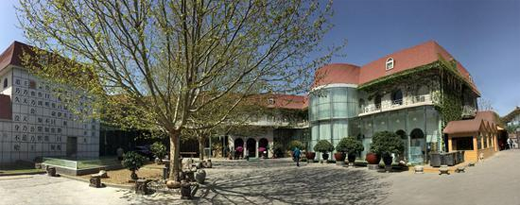
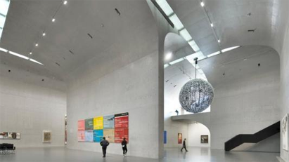

当前，在国家相关政策的鼓励下，民间博物馆的兴起潮正席卷中华大地。 说起民间博物馆，过去听说过“三寸金莲”、“火花”、“古瓷器”、“古钱币”、“筷子”等民间收藏馆，但大都规模不大，不成气候，且基本上都开在民居之中，条件简陋。随着各地基本建设的兴起，景区建设成为各地打造“城市名片”的招数。于是各景区纷纷建起了各种收藏馆，也热闹了好一阵子。但时过境迁，慢慢的也就趋于自生自灭。（在新一轮的民间博物馆建设潮兴起的同时，各地有关部门，能否对此类收藏馆予以一定的关注、支持和帮助？） 而如今的民间博物馆，不少已令人刮目相看。其中的佼佼者，以马未都的“观复博物馆”、刘益谦的“龙美术馆”和樊建川的“建川博物馆”最为有名。这三家博物馆，目前均已开出多家分馆，且都是“高、大、上”的存在。 北京观复博物馆 北京观复博物馆于1996年10月30日获政府批准成立，马未都先生为创办人。2004年实行理事会制。观复博物馆现位于北京市朝阳区大山子张万坟金南路18号，总占地面积八亩。 观复博物馆设有陶瓷馆、家具馆、工艺馆、门窗馆和油画馆，常年举办各类展览。布展侧重开放形式，强调人与历史的沟通，突出传统文化的亲和力。 陶瓷馆展出的瓷器，为唐、宋、辽、金、元、明、清时期最具代表性的器物。家具馆分6个展厅，陈列了明、清珍贵家具共100多件。工艺馆内常年展览铜胎掐丝珐琅器、铜胎画 珐琅器、金属造像、铜器、漆器、玉器、木器、百宝嵌等历代工艺珍品，并设有“松溪草堂”的实景陈列。观复博物馆的中国古代门窗展为国内屈指可数的独特题材。油画馆常年展览中国现当代油画家、雕塑家的重要作品，不定期调整展览主题。 厦门观复博物馆 厦门观复博物馆位于鼓浪屿“名园之最”菽庄花园内，与壬秋阁隔门相望。面积600多平方米，呈链型分布，共有八个展厅，展线清晰明了。内部的装修简洁中不失细部，使用了不少中国传统工艺，如手工雕花隔扇、大漆工艺等，为博物馆的环境增色许多。 厦门观复博物馆分为中国古代家具展、食之美器展、古人情趣展、明清陶瓷展以及特展。中国古代家具展依照中国传统民居的陈列方式向观众展示明清时硬木家具；食之美器展展出了明清时期的杯碗盘碟等，可一窥古人生活细节之精致；古人情趣展以特别的角度呈现古人在生活中的点滴，如太白饮酒之酒之乐，梅妻鹤子之高雅等；明清陶瓷展则展示了与闽南地区相关的瓷器。 上海观复博物馆 上海观复博物馆位于上海陆家嘴城市新地标——上海中心大厦的37层，设有4个固定展厅：瓷器馆、东西馆、金器馆、造像馆，以及一个临时展厅。  上海观复博物馆以中国深厚文化为基石，打造高品质的专业展览，环境典雅，注重人与历史的沟通，突出传统文化的亲和力。馆内各项现代化配套设施将提供更为细致舒适的服务。 上海龙美术馆 2014年4月和11月，上海新理益集团董事长刘益谦先后以2.8亿港元和3.484亿港元拍得“明成化斗彩鸡缸杯”、“明永乐御制红阎摩敌刺绣唐卡”，分别创下中国瓷器和中国艺术品的世界拍卖纪录。龙美术馆也因其主人一年内大手笔竞投拍得这两件“镇馆之宝”藏品而声名远扬。 中国内地收藏家刘益谦、王薇夫妇创办的私立龙美术馆2015年3月14日在香港举行新闻发布会，推介其2015年将举办包括20世纪中国画展、《15个房间》等在内的一系列精品展览并宣布他俩名下的，位于上海的龙美术馆正式开馆。 目前龙美术馆在上海浦东和徐汇滨江和上海宝山顾村同时拥有三个大规模场馆——浦东馆、西岸馆和顾村馆，构成独特的“一城三馆”艺术生态，也是中国内地迄今颇具规模和收藏实力的私立美术、艺术馆。 成都建川博物馆 成都建川博物馆位于四川省成都市大邑县安仁古镇，由民营企业家樊建川所创建。  博物馆占地500亩，建筑面积近10万平方米，拥有藏品800余万件，其中国家一级文物404件。博物馆以“为了和平，收藏战争；为了未来，收藏教训；为了安宁，收藏灾难；为了传承，收藏民俗”为主题，建设抗战、民俗、红色年代、抗震救灾四大系列30余座分馆，是目前国内民间资本投入最多、建设规模和展览面积最大，收藏内容最丰富的民间博物馆群落。 建川博物馆突破了传统意义上单纯的“博物馆”的概念，不仅在国内第一次将多达30余座博物馆汇集在一起，而且还进一步将各种业态的配套如酒店、客栈、茶馆、文物商店等汇集在一起呈现亚博物馆状态，形成一个集藏品展示、教育研究、旅游休闲、收藏交流、艺术博览、影视拍摄等多项功能为一体的新概念博物馆和中国百年文博旅游及乡村休闲、旅游度假地。 由于成效显著，获得了国家文化产业示范基地、国家4A级旅游景区、全国光彩事业重点项目等荣誉称号。 馆长樊建川曾说：“建博物馆、收藏文物是为了记录和还原历史，这不仅仅是为了纪念，而是为了让每个人的心灵都直面民族创伤，让战争的记忆成为民族的思想资源”。可见，樊建川建馆的目的是让世人铭记历史。 2005年8月15日，抗战胜利60周年之际，这座占地500亩，建筑面积达1.5万平方米的首批10多个博物馆首次向世人开放。在建川博物馆群落整个的设计当中，抗战系列无疑是一台“重头戏”。2010年8月初开放的有中流砥柱馆、正面战场馆、川军抗战馆、援华美军馆和抗日俘虏馆5个单馆，以及中国壮士群雕广场、抗战老兵手印广场两个主题广场。而侵华日军馆和汉奸丑态馆在当时是即将开放的重要项目，这两个馆后来被规划入同一个建筑内。 2005年，连战访问大陆之际参观了建川博物馆，并为正面战场馆题写了馆名。 70多年过去了，还有多少关于这场伟大战争的故事和细节不为我们所了解？时光悠悠，当年20岁的青年，谁还能以亲历者的角色讲述那些惊心动魄的战斗？建川博物馆建成开放以来，全国各地又有多少人远道而来寻找历史的答案？无疑，樊建川先生做了一件很有意义的大好事。 我们也相信，马未都先生、刘益谦先生、樊建川先生等人在保护和传承中华传统文化等方面所作出的努力和贡献，后人是绝对不会忘记的。